[PRML]1.Introduction
\[ \newcommand{\bsf}[1]{\boldsymbol{\mathsf{ #1}}} \]
Example: Polynomial Curve Fitting
PRML 的第一章是围绕着一个简单的回归问题——多项式拟合展开的。问题虽然简单，但其中蕴藏着许多奥妙。作者分别阐述了概率论、决策论和信息论三个贯穿全书的重要工具，展示了频率学派和贝叶斯学派面对问题的不同思考与处理手段，尤其侧重于贝叶斯方法相比频率方法体现出的优势。对于只看过吴恩达入门机器学习的我来说，本章直接为我踹开了贝叶斯的大门，刷新了我的认知。
废话不多说，书中举例的回归问题如下图所示：
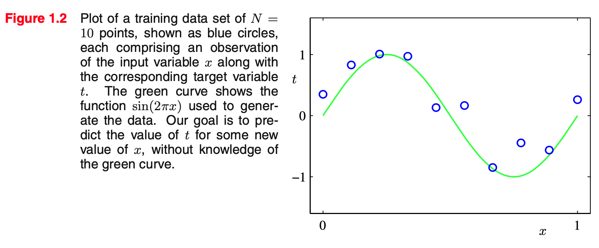
在这个例子中，训练数据（蓝色空心圆点）是基于 \(\sin(2\pi x)\)（绿色曲线）添加随机高斯噪声生成的。记训练集为 \(\bsf{x}\equiv (x_1,\ldots,x_N)^\mathrm T\)，对应的观测值为 \(\bsf{t}\equiv(t_1,\ldots,t_N)^\mathrm T\)，图 1.2 展示了包含 10 个样本的训练集。我们希望从数据集中找到一些规律，使得询问一个新的 \(x\) 时能预测其对应 \(t\) 的值。
考虑用多项式做回归： \[ y(x,\mathbf w)=w_0+w_1x+w_2x^2+\cdots+w_Mx^M=\sum_{j=0}^M w_jx^j \] 其中 \(\mathbf w=(w_0,\ldots,w_M)^\mathrm T\) 是模型的参数，\(M\) 为多项式的阶数。这是一个线性模型（linear model），因为 \(y(x,\mathbf w)\) 是关于 \(\mathbf w\) 的线性函数（尽管关于 \(x\) 是非线性的）。
为了拟合训练数据，我们会定义一个误差函数并最小化之： \[ E(\mathbf w)=\frac{1}{2}\sum_{n=1}^N(y(x_n,\mathbf w)-t_n)^2 \] 通过求导取零一通计算，这个优化问题可以算出一个闭式解。不过先别急着算，这里还有一个问题尚待解决——如何选择 \(M\)？不同的 \(M\) 对应了不同的模型，会导致效果完全不同的解，如下图所示：
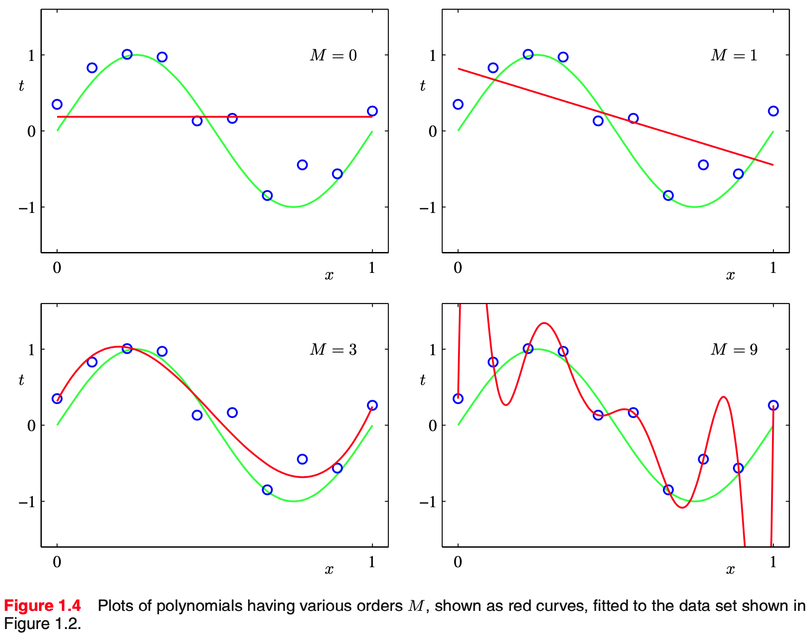
有点机器学习基础的同学都知道，\(M=0,1\) 时模型能力不够，发生了欠拟合；而 \(M=9\) 时模型完美地穿过了所有训练数据，但会在测试数据上表现极差，发生了过拟合；\(M=3\) 则刚刚好。过拟合现象其实挺讽刺的——\(M=9\) 明明包含了 \(M=3\)，它理应表现得至少不比后者差；另外，如果要用多项式无限逼近 \(\sin\) 函数，甚至需要无限阶的多项式（泰勒级数），所以我们期待 \(M\) 越大、模型效果越好才对。
\(M=9\) 的多项式有 10 个自由参数，所以刚好能拟合大小为 10 的训练集。那如果我们加大训练集的规模呢？下图展示了 15 和 100 个数据点下的结果：
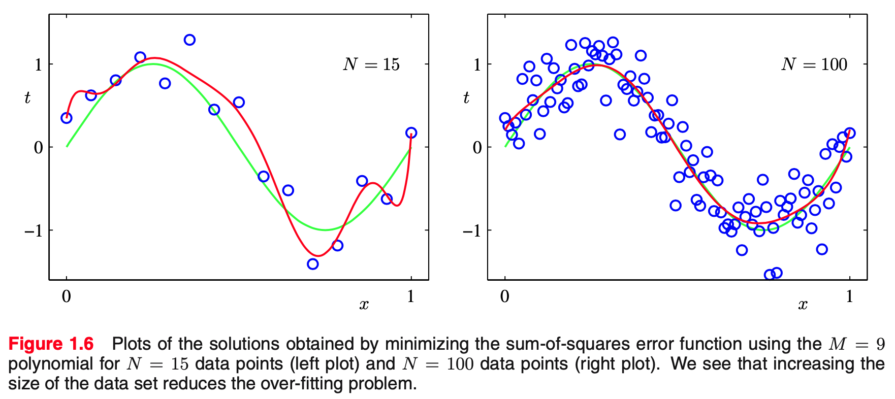
可以看见，随着训练集规模增大，过拟合现象得到了缓解。因此，一个启发式的经验是说，参数量应该比数据量少若干倍（如 5~10 倍）。但是，这样的解决方案其实不是很让人满意，我们更希望参数量与问题的复杂程度挂钩，而不是与数据量挂钩。在下文中，我们会看到上述最小二乘法的本质其实是极大似然估计，而过拟合是极大似然估计的一般属性。相反，贝叶斯方法可以避免过拟合问题。事实上，当参数量多于数据量时，贝叶斯模型能够自适应地调节有效参数量。
另一个常见的解决过拟合的方案是正则化。如果我们考察不同 \(M\) 下解出来的 \(\mathbf w\) 数值，如下表所示：
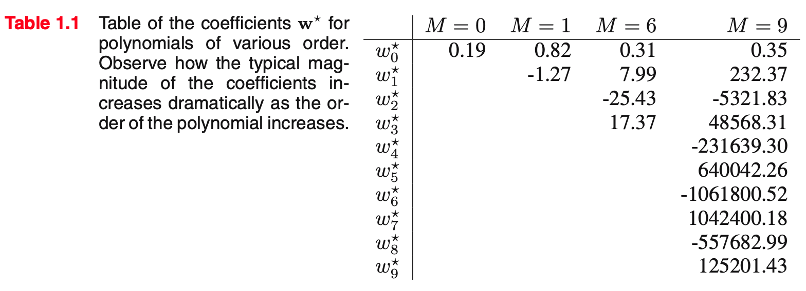
可以看见，随着 \(M\) 增大，高阶项的系数（绝对值）变得异常的大。为了惩罚过大的参数值，我们可以将参数的平方和加入误差函数，并用系数 \(\lambda\) 调节其大小： \[ \tilde E(\mathbf w)=\frac{1}{2}\sum_{n=1}^N(y(x_n,\mathbf w)-t_n)^2+\frac{\lambda}{2}\Vert\mathbf w\Vert^2 \] 依旧取 \(M=9\)，在合适的正则化参数下，拟合结果就平滑了许多。当然，如果正则化过分了，拟合得就不好了：
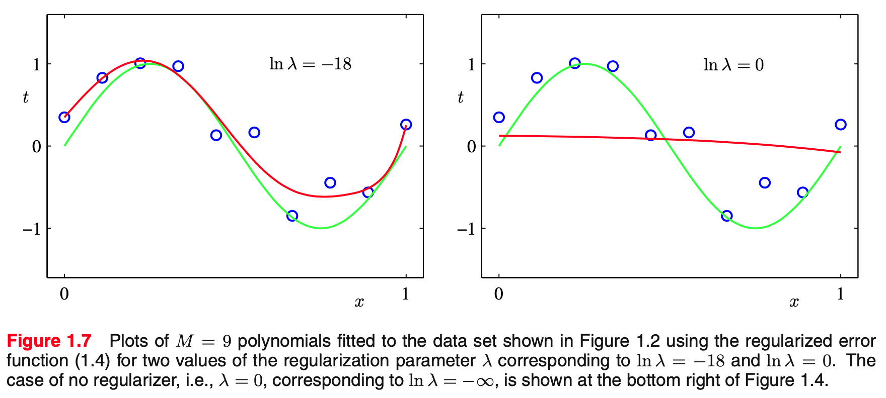
在正则化的作用下，\(\mathbf w\) 的数值得到了控制：
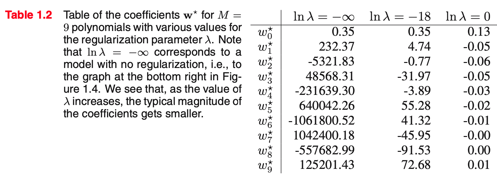
Probability Theory
基础的概率知识直接跳过，我们从贝叶斯说起。
Bayesian probabilities
经典频率学派将概率视作随机可重复事件发生的频率，而在贝叶斯视角下，概率是对不确定性（uncertainty）的度量。考虑一个不确定的事件，例如北极的冰川是否会在世纪末消失，这可不是一个可以重复试验的事情，但是我们依旧能对冰川的融化速度有大致的评估。如果我们现在有了一些新的观测，我们也许会更新之前的评估，进而调整我们的动作，例如减少温室气体的排放。这个过程可以用贝叶斯概率做定量地描述。
在上文多项式拟合的例子中，我们可以用概率来表示模型参数 \(\mathbf w\) 的不确定性。我们首先为其指定一个先验概率（prior） \(p(\mathbf w)\)，再设观察到的数据为 \(\mathcal D=\{t_1,\ldots,t_N\}\)，那么数据在当前参数下的似然（likelihood）就是 \(p(\mathcal D\vert \mathbf w)\)，于是，根据贝叶斯定理，我们可以计算后验概率（posterior）： \[ p(\mathbf w\vert \mathcal D)=\frac{p(\mathcal D\vert \mathbf w)p(\mathbf w)}{p(\mathcal D)} \] 其中 \(p(\mathcal D)=\int p(\mathcal D\vert \mathbf w)p(\mathbf w)\mathrm d\mathbf w\) 是归一化系数。后验概率说明了我们在观察到数据 \(\mathcal D\) 之后对 \(\mathbf w\) 的不确定性的更新。用先验、后验和似然的术语，贝叶斯定理可以表述为： \[ \text{posterior}\propto\text{likelihood}\times\text{prior} \] 可见，在贝叶斯视角下，模型参数 \(\mathbf w\) 具有不确定性、是个变量，服从一个概率分布。我们还能根据新的观察更新这个概率分布。相反，在频率学派视角下，\(\mathbf w\) 是一个固定的、客观存在的参数，只不过需要我们去估计它。例如，让似然 \(p(\mathcal D\vert \mathbf w)\) 最大的解就是一种估计，这种方法被称作极大似然估计（MLE）。
The Gaussian distribution
上文说过，最小二乘法本质就是极大似然估计，为了建立二者的联系，我们先考虑另一个问题：用高斯分布为数据的分布建模。假设数据集为 \(N\) 个（独立同分布）标量 \(\bsf x=(x_1,\ldots,x_N)^\mathrm T\)，那么在高斯分布 \(\mathcal N(\mu,\sigma^2)\) 下，数据的似然为： \[ p(\bsf x\vert\mu,\sigma^2)=\prod_{n=1}^N \mathcal N(x_n\vert\mu,\sigma^2) \] 最大化似然等价于最小化负对数似然： \[ -\ln p(\bsf x\vert\mu,\sigma^2)=\frac{1}{2\sigma^2}\sum_{n=1}^N(x_n-\mu)^2+\frac{N}{2}\ln\sigma^2+\frac{N}{2}\ln(2\pi) \] 求导取零，解得： \[ \begin{cases} \mu_{\text{ML}}=\frac{1}{N}\sum_{n=1}^N x_n\\ \sigma^2_{\text{ML}}=\frac{1}{N}\sum_{n=1}^N(x_n-\mu_{\text{ML}})^2 \end{cases} \] 即极大似然估计的均值和方差分别是样本均值和样本方差。然而，这样计算得到的方差是有偏的——它比真正的方差偏小。为了验证这一点，我们可以假设数据采样自 \(\mathcal N(\mu,\sigma^2)\)，那么经过计算有： \[ \mathbb E[\mu_\text{ML}]=\frac{1}{N}\sum_{n=1}^N\mathbb E[x_n]=\mu \]
\[ \begin{align} \mathbb E[\sigma_\text{ML}^2]&=\frac{1}{N}\sum_{n=1}^N\mathbb E\left[\left(x_n-\frac{1}{N}\sum_{i=1}^N x_i\right)^2\right]\\ &=\frac{1}{N}\sum_{n=1}^N\mathbb E\left[x_n^2-\frac{2}{N}x_n\left(\sum_{i=1}^Nx_i\right)+\frac{1}{N^2}\left(\sum_{i=1}^Nx_i\right)^2\right]\\ &=\frac{1}{N}\sum_{n=1}^N\mathbb E[x_n^2]-\frac{1}{N^2}\mathbb E\left[\left(\sum_{i=1}^Nx_i\right)^2\right]\\ &=\mu^2+\sigma^2-\frac{1}{N^2}\left(N(\mu^2+\sigma^2)+N(N-1)\mu^2\right)\\ &=\frac{N-1}{N}\sigma^2 \end{align} \]
推导过程中用了高斯分布的二阶矩为 \(\mu^2+\sigma^2\) 的结论。
下图直观地描绘了这个问题：
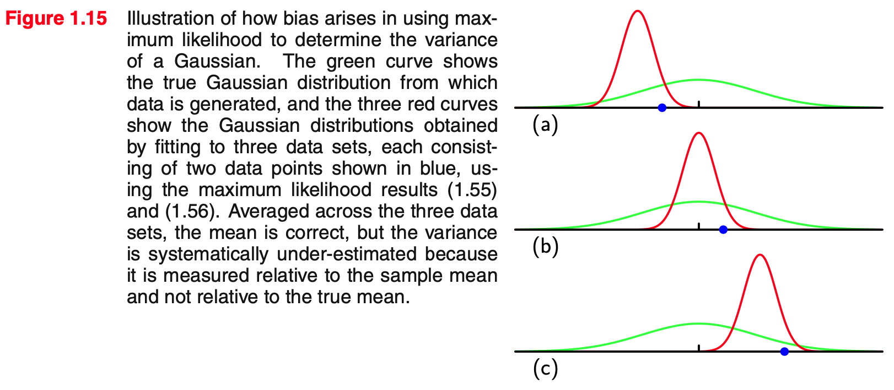
当 \(N\to\infty\) 时，\(\sigma^2_\text{ML}\to\sigma^2\)，这个偏差（bias）不会引起太大的问题。但是本书将会考虑有很多参数的复杂模型，这时偏差问题就会很严重。事实上，我们将看到，极大似然估计带来的偏差问题正是过拟合的根源所在。
Curve fitting re-visited
现在让我们回过头来，从概率角度重新审视多项式曲线拟合问题。我们为模型的预测值赋以不确定性，并用高斯分布来建模： \[ p(t\vert x,\mathbf w,\beta)=\mathcal N(t\vert y(x,\mathbf w),\beta^{-1}) \] 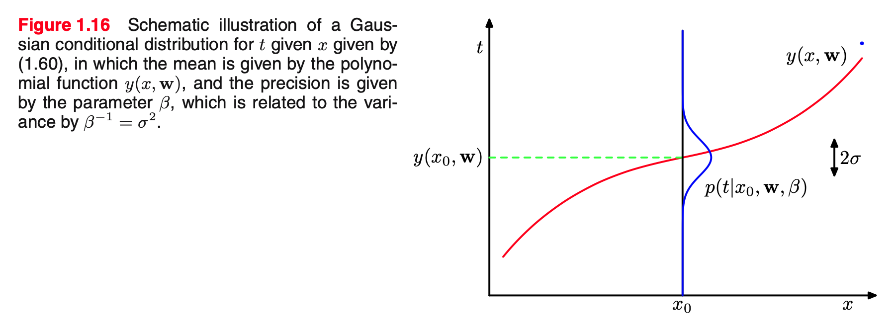
于是乎，使用极大似然估计，我们有似然： \[ p(\bsf t\vert \bsf x,\mathbf w,\beta)=\prod_{n=1}^N\mathcal N(t_n\vert x_n,\mathbf w,\beta^{-1}) \] 负对数似然： \[ -\ln p(\bsf t\vert\bsf x,\mathbf w,\beta)=\frac{\beta}{2}\sum_{n=1}^N(y(x_n,\mathbf w)-t_n)^2-\frac{N}{2}\ln\beta+\frac{N}{2}\ln(2\pi) \] 为解 \(\mathbf w_\text{ML}\)，由于后两项与 \(\mathbf w\) 无关，所以可以直接丢掉；第一项的系数也与 \(\mathbf w\) 无关，可以换成 \(\frac{1}{2}\)——那么我们就得到了第一节中的平方和误差函数。因此，最小二乘法就是在高斯分布假设下的极大似然估计。
当然，上式还有另一个参数 \(\beta\)，根据上一小节的结论，其解为： \[ \frac{1}{\beta_\text{ML}}=\frac{1}{N}\sum_{n=1}^N(y(x_n,\mathbf w)-t_n)^2 \] 有了 \(\mathbf w_\text{ML}\) 和 \(\beta_\text{ML}\)，我们在预测时就不只是给出一个点，而是一个概率分布了： \[ p(t\vert x,\mathbf w_\text{ML},\beta_\text{ML})=\mathcal N(t\vert y(x,\mathbf w_\text{ML}),\beta_\text{ML}^{-1}) \] 虽然我们已经从点估计跃升为了预测概率分布，但这还不是贝叶斯，毕竟极大似然估计依旧在频率学派的范畴。前文提及，贝叶斯视角下的模型参数 \(\mathbf w\) 也由概率分布描述。为简便起见，我们将先验分布设为以 \(\alpha\) 为参数的多元高斯分布： \[ p(\mathbf w\vert\alpha)=\mathcal N(\mathbf w\vert \mathbf 0,\alpha^{-1}\mathbf I)=\left(\frac{\alpha}{2\pi}\right)^{(M+1)/2}\exp\left(-\frac{\alpha}{2}\mathbf w^\mathrm T\mathbf w\right) \] 注意 \(\mathbf w\) 有 \(M+1\) 维而不是 \(M\) 维。这里的 \(\alpha\) 是人为设置的参数，即超参数。那么根据贝叶斯定理，我们有： \[ \underbrace{p(\mathbf w\vert\bsf x,\bsf t,\alpha,\beta)}_\text{posterior}\propto \underbrace{p(\bsf t\vert\bsf x,\mathbf w,\beta)}_\text{likelihood}\ \underbrace{p(\mathbf w\vert\alpha)}_\text{prior} \] 现在，我们可以求出一个使后验分布最大的 \(\mathbf w^\ast\)，这被称为最大后验估计（MAP）： \[ \begin{align} \mathbf w^\ast&=\mathop{\text{argmax}}_{\mathbf w}\ p(\mathbf w\vert \bsf x,\bsf t,\alpha,\beta)\\ &=\mathop{\text{argmax}}_{\mathbf w}\ p(\bsf t\vert\bsf x,\mathbf w,\beta)p(\mathbf w\vert \alpha)\\ &=\mathop{\text{argmax}}_{\mathbf w}\ \ln p(\bsf t\vert\bsf x,\mathbf w,\beta)+\ln p(\mathbf w\vert\alpha)\\ &=\mathop{\text{argmin}}_{\mathbf w}\ \frac{\beta}{2}(y(x_n,\mathbf w)-t_n)^2+\frac{\alpha}{2}\mathbf w^\mathrm T\mathbf w \end{align} \] 可以看到，第一项就是极大似然估计（最小二乘法）的优化目标，而第二项就是正则项。所以说，最大后验估计等价于极大似然估计加上一个与先验分布有关的正则项。
Bayesian curve fitting
虽然我们现在用先验、后验概率分布来描述参数 \(\mathbf w\)，但是 MAP 给出的是点估计，所以依旧不能算做是完全的贝叶斯。完全的贝叶斯方法要求一贯使用概率的 sum rule 和 product rule 推导（而不是推一半突然取个 argmax），这往往需要我们对所有的 \(\mathbf w\) 积分。不幸的是，这个积分不总是容易计算的，如何计算、估计或绕开这个积分成为了很多研究的关注点。
本书中，sum rule 指的是 \(p(X)=\sum_Y p(X,Y)\)；product rule 指的是 \(p(X,Y)=p(Y\vert X)p(X)\).
在多项式曲线拟合问题中，我们已知的是 \(\bsf x,\bsf t\)，目标是给定 \(x\)，预测对应的 \(t\)，因此我们希望求的是 \(p(t\vert x,\bsf x,\bsf t)\). 这里，我们假设 \(\alpha,\beta\) 是固定已知的。
把 \(\bsf x,\bsf t\) 和 \(x,t\) 联系起来的是我们的回归模型，因此： \[ p(t\vert x,\bsf x,\bsf t)=\int p(t\vert x,\mathbf w)p(\mathbf w\vert \bsf x,\bsf t)\mathrm d\mathbf w \] 右式中，\(p(t\vert x,\mathbf w)\) 即模型预测的概率分布，定义在上一小节的最开始处；而 \(p(\mathbf w\vert\bsf x,\bsf t)\) 是参数的后验分布，由贝叶斯公式计算得到： \[ p(\mathbf w\vert\bsf x,\bsf t)=\frac{p(\bsf t\vert\bsf x,\mathbf w,\beta)p(\mathbf w\vert\alpha)}{p(\bsf t\vert\bsf x)}=\frac{p(\bsf t\vert\bsf x,\mathbf w,\beta)p(\mathbf w\vert\alpha)}{\int p(\bsf t\vert\bsf x,\mathbf w,\beta)p(\mathbf w\vert\alpha)\mathrm d\mathbf w} \] 分子中的似然和先验都在上一小节有所定义；而分母出现了棘手的对 \(\mathbf w\) 的积分。幸运的是，在多项式曲线拟合问题中，所有的积分都可以计算出解析形式，因此最后我们能得到解析解。具体解的过程和结果此处略去，相关内容会在书的第三章详细阐述。结果可以绘制为下图：
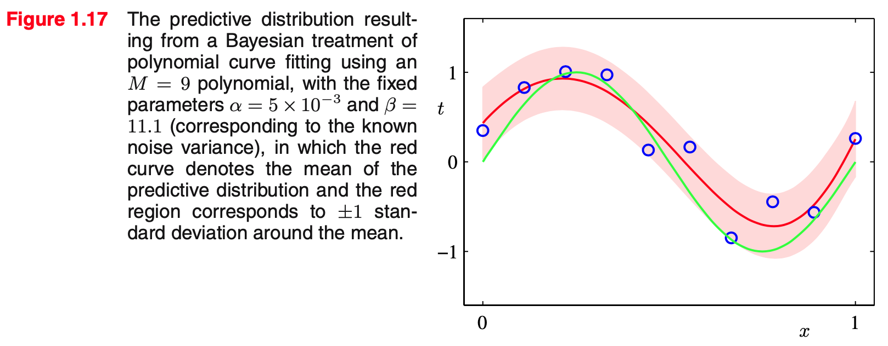
The Curse of Dimensionality
多项式曲线拟合问题只有一个输入变量 \(x\)，但是很多实际问题会涉及到更多的变量，这时我们会遇到维度灾难。书中举了这样的一个例子：每条数据有 12 个属性，即由一个 12 维向量表示，共分为 3 类。其中 \((x_6,x_7)\) 这两维的特征可以可视化为下图：
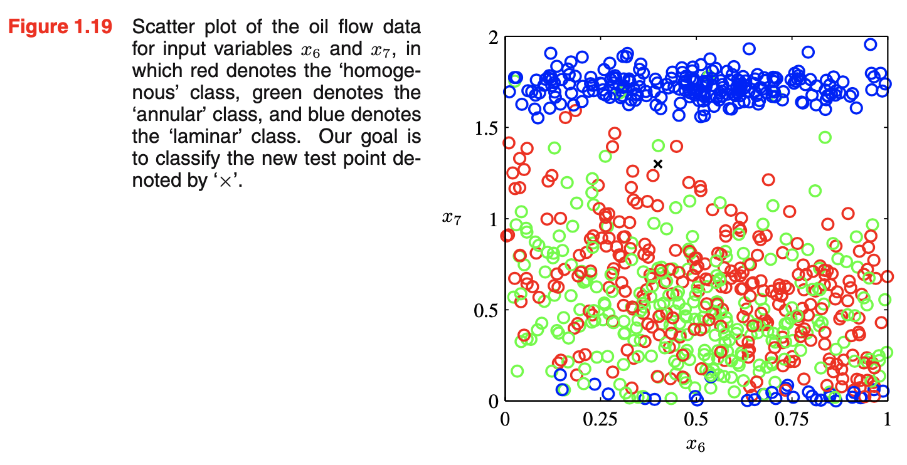
如果我们想对 × 做分类，一个简单的做法是把空间分成若干小格，每一个格子的类别定义为落在其中的点的大多数类别；那么询问一个新的数据点时，我们看它落在哪一个格子里即可，如下图所示：
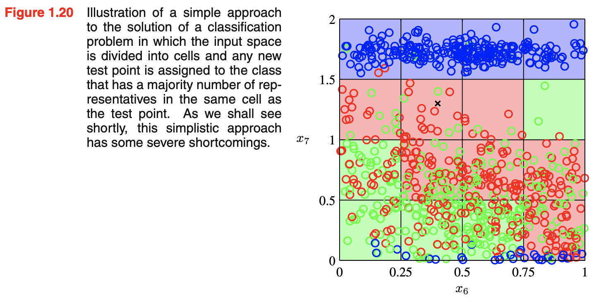
当然，这个方法比较 naive，存在很多问题，但是最重要的问题之一就是维度灾难。当维度从 2 维上升到更高维时，用来划分高维空间的格子数量将呈指数增长，那么，为了让每个格子里有足够多的数据点，所需要的数据数量也就随之呈指数增加。如下图所示：
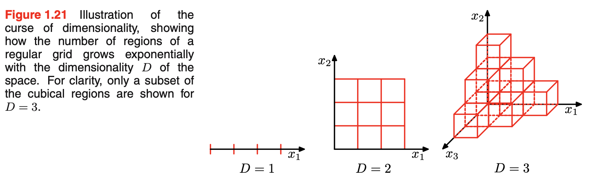
我们也可以从多项式拟合问题里看到维度灾难。假设我们有 \(D\) 个输入变量，那么一个 3 阶多项式将长这样： \[ y(\mathbf x,\mathbf w)=w_0+\sum_{i=1}^D w_ix_i+\sum_{i=1}^D\sum_{j=1}^D w_{ij}x_ix_j+\sum_{i=1}^D\sum_{j=1}^D\sum_{k=1}^D w_{ijk}x_ix_jx_k \] 也就是说，\(M\) 阶多项式的参数数量将变成 \(O(D^M)\). 虽然这是幂增长而非指数增长，但依旧增长得很快，使得模型变得笨重而难以实用。
当维度变高后，很多低维空间下的直觉将变得不再正确。例如，设有 \(D\) 维空间下的一个单位超球体，考虑位于半径 \(r=1-\epsilon\) 到 \(r=1\) 之间部分的（相对）体积： \[ \frac{V_D(1)-V_D(1-\epsilon)}{V_D(1)}=1-(1-\epsilon)^D \] 当 \(D\) 很大时，即便 \(\epsilon\) 较小，这个比例依旧会接近 \(1\)，可以做图以直观展示：
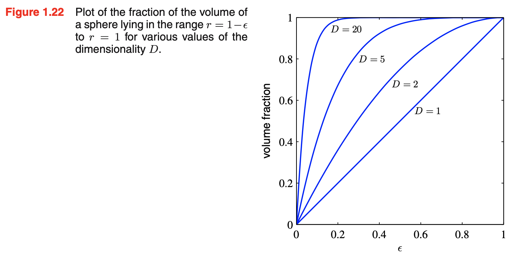
这意味着，高维空间中的一个超球体，其大部分体积都集中在接近表面的薄薄的一层上！
高维高斯分布也有类似的情况。在极坐标下，做出 \(p(r)\) 关于 \(r\) 的图，可以看见大部分概率密度集中在某一个特定 \(r\) 的附近：
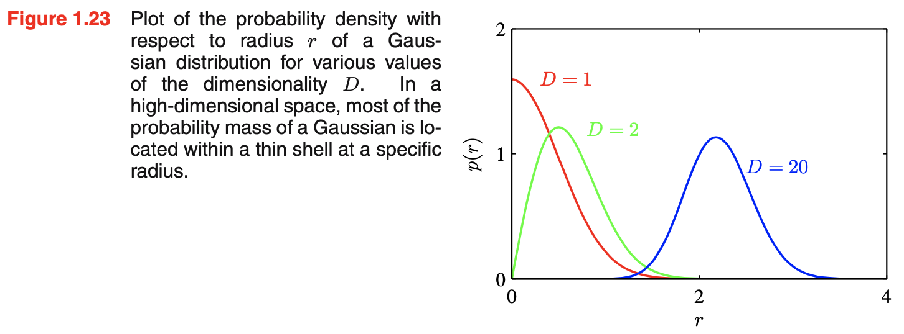
虽然如此，在实践中我们依旧能够有效地处理高维数据，原因有两点：
- 真实数据往往处于低维的子空间/流形上；
- 真实数据往往有一定的光滑性，即输入变量的微小变化会引起目标变量的微小变化，因此我们可以用插值等方式对新的输入做预测。
Decision Theory
本节我们围绕一个非常经典的例子——癌症诊断展开：输入一张 X 光片 \(\mathbf x\)，决定病人是否患有癌症。这是一个分类问题，我们用类别 \(\mathcal C_1\) 或 \(t=0\) 表示患癌，类别 \(\mathcal C_2\) 或 \(t=1\) 表示健康。
使用第二节概率论的方法，我们能够推断出一些概率分布，其中核心是联合概率 \(p(\mathbf x,\mathcal C_k)\)（条件概率或边缘概率都可以通过相关公式由联合概率推出来）。给定这些概率，我们如何决定病人是否真的患有癌症呢？这就是决策论要解决的问题。
直觉上，我们会选取 \(p(\mathcal C_k\vert \mathbf x)\) 最大的那一类 \(k\). 的确，我们稍后会看到这确实是让错误率最小的方法。然而，如果我们的目标不是最小化错误率，那么这个决策可能会发生变化。
Minimizing the misclassification rate
对于一种决策，设区域 \(\mathcal R_k\) 内的数据点会被分类为 \(C_k\)，这些决策区域的边界被称作“决策边界”。假设我们的目标是最小化错误分类率，那么在癌症诊断的例子中，错误率为： \[ \begin{align} p(\text{mistake})&=p(\mathbf x\in \mathcal R_1,\mathcal C_2)+p(\mathbf x\in \mathcal R_2,\mathcal C_1)\\ &=\int_{\mathcal R_1} p(\mathbf x, \mathcal C_2)\mathrm d\mathbf x+\int_{\mathcal R_2} p(\mathbf x, \mathcal C_1)\mathrm d\mathbf x \end{align} \] 因此，要让错误率最小，如果 \(p(\mathbf x,\mathcal C_1)>p(\mathbf x,\mathcal C_2)\)，我们就应该把 \(\mathbf x\) 分类为 \(\mathcal C_1\).
拓展到 \(K\) 分类： \[ p(\text{correct})=\sum_{k=1}^K p(\mathbf x\in\mathcal R_k,\mathcal C_k)=\sum_{k=1}^K\int_{\mathcal R_k}p(\mathbf x,\mathcal C_k)\mathrm d\mathbf x \] 要让正确率最大，我们的决策就是把数据点 \(\mathbf x\) 分类给 \(p(\mathbf x,\mathcal C_k)\) 最大的那个 \(k\). 考虑到 \(p(\mathbf x,\mathcal C_k)=p(C_k\vert\mathbf x)p(\mathbf x)\)，这个决策等价于把 \(\mathbf x\) 分类给具有最大后验概率 \(p(\mathcal C_k\vert\mathbf x)\) 的 \(k\)，正如上文所言。
Minimizing the expected loss
很多应用场景中，我们的目标比单单最小化错误率要复杂。例如癌症诊断，如果把一个健康的人诊断为患癌，那么大不了再多做点检测；但如果把一个患癌的人诊断为健康，那就要对他/她的生命负责了。虽然两种情况都是误诊，但后者的后果更为严重。为此，我们可以定义一个 loss matrix \(L\)，\(L_{kj}\) 表示真实类别为 \(k\) 但是预测类别为 \(j\) 的损失值，并试图最小化损失的期望： \[ \mathbb E[L]=\sum_k\sum_j\int_{\mathcal R_j} L_{kj}p(\mathbf x,\mathcal C_k)\mathrm d\mathbf x \] 那么要使上式最小，我们的决策是把 \(\mathbf x\) 分类给使得 \(\sum_k L_{kj}p(\mathbf x,\mathcal C_k)\) 最小的 \(j\)；或等价地，使得 \[ \sum_kL_{kj}p(\mathcal C_k\vert\mathbf x) \] 最小的 \(j\).
例如，在癌症诊断的例子中，我们可以定义 \(L=\begin{bmatrix}0&1000\\1&0\end{bmatrix}\)，让患癌但漏诊的损失非常大，从而减小这种情况的发生。
The reject option
当最大的 \(p(\mathcal C_k\vert \mathbf x)\) 都比 \(1\) 小很多时，我们对 \(\mathbf x\) 的类别预测有很大的不确定性，这个时候不如拒绝为其分类。我们可以设置一个阈值 \(\theta\)，仅当 \(\max_k p(\mathcal C_k\vert \mathbf x)>\theta\) 时做出分类决策，反之拒绝分类（例如交给人工检测是否患癌）。
Inference and decision
通过上文的叙述，我们看到一个分类问题被划分为了两个阶段——先推断（inference），再决策（decision）。在推断阶段，我们用概率论方法获得 \(p(\mathbf x,\mathcal C_k)\) 或 \(p(\mathcal C_k\vert \mathbf x)\)，然后在决策阶段根据已得的概率值决定分类结果。另一种方法是一步到位——直接学习一个函数将输入 \(\mathbf x\) 映射到决策，这样的函数被称作 discriminant function.
事实上，我们有三种解决决策问题的方案：
Generative models：首先对每个 \(\mathcal C_k\) 推断 \(p(\mathbf x\vert\mathcal C_k)\) 和 \(p(\mathcal C_k)\)，然后运用贝叶斯定理： \[ p(\mathcal C_k\vert\mathbf x)=\frac{p(\mathbf x\vert\mathcal C_k)p(\mathcal C_k)}{p(\mathbf x)}=\frac{p(\mathbf x\vert\mathcal C_k)p(\mathcal C_k)}{\sum_kp(\mathbf x\vert\mathcal C_k)p(\mathcal C_k)} \] 计算后验概率 \(p(\mathcal C_k\vert \mathbf x)\). 等价地，也可以先推断出联合分布 \(p(\mathbf x,\mathcal C_k)\)，然后归一化得到后验概率。如此建模的模型被称作生成模型，因为我们可以从 \(p(\mathbf x\vert\mathcal C_k)\) 中采样生成合成数据。
Discriminative models：直接推断后验概率 \(p(\mathcal C_k\vert\mathbf x)\)，然后依其做决策。如此建模的模型被称作判别模型。
Discriminant function：将输入 \(\mathbf x\) 直接映射到其类别标签 \(f(\mathbf x)\)，跳过所有概率。
对生成模型而言，在实际应用中 \(\mathbf x\) 的维度常常很高，需要大量的数据来足够精确地估计 \(p(\mathbf x\vert\mathcal C_k)\). 而先验分布 \(p(\mathcal C_k)\) 可以通过统计训练集获得。其优势在于能够计算边缘分布 \(p(\mathbf x)\)，在离群点检测（outlier detection）等方面有所应用。然而，如果只为了解决分类问题，那么没有必要费劲建模 \(p(\mathbf x\vert\mathcal C_k)\) 或联合分布，直接用判别模型建模 \(p(\mathcal C_k\vert\mathbf x)\) 即可。
第三种方案抛弃了后验概率，但我们认为后验概率在很多时候还是很有用的：
Minimizing risk. 如果一个问题的 loss matrix 会随时间不断变化（在金融中很常见），那么有后验概率我们可以随时调整决策，但如果只有 discriminant function，每次变化就要重新训练一遍；
Reject option. 根据后验概率的大小，我们可以拒绝分类，如上一小节所述；
Compensating for class priors. 很多分类问题面临类别不平衡问题，比如癌症的 X 光片数量远少于健康的 X 光片数量。这时要训练一个好的分类器是很困难的，因为就算分类器无论输入是什么都输出健康，那它的正确率也非常高。可行的解决方案是人为构造一个类别平衡的数据集（如在多类中只采样和少类一样多的样本），在上面训练模型。但由于我们更改了数据类别的分布，所以回归实际应用时应该做相应的补偿。具体而言，假设原本数据的类别分布为 \(p(\mathcal C_k)\)，更改后为 \(\tilde p(\mathcal C_k)\)，在更改后的数据上训练的模型为 \(\tilde p(\mathcal C_k\vert\mathbf x)\)，根据贝叶斯定理： \[ \tilde p(\mathcal C_k\vert\mathbf x)\propto \tilde p(\mathcal C_k)p(\mathbf x\vert\mathcal C_k) \] 注意类别条件分布 \(p(\mathbf x\vert\mathcal C_k)\) 是不会因为我们对数据集的更改而变化的，所以： \[ p(\mathcal C_k\vert\mathbf x)\propto \tilde p(\mathcal C_k\vert\mathbf x)\cdot\frac{p(\mathcal C_k)}{\tilde p(\mathcal C_k)} \] 这样就解决了类别不平衡问题。如果我们没有后验概率，就无法完成这样的操作。
Combining models. 对于复杂的应用，我们也许会在不同的特征上训练多个模型，这时我们能够依据它们的后验概率合并它们的输出。例如，在癌症诊断的例子中，假设除了 X 光片 \(\mathbf x_\text{I}\)，我们还有血液样本 \(\mathbf x_\text{B}\)，并且二者是条件独立的： \[ p(\mathbf x_\text{I},\mathbf x_\text{B}\vert\mathcal C_k)=p(\mathbf x_\text{I}\vert\mathcal C_k)p(\mathbf x_\text{B}\vert\mathcal C_k) \] 那么： \[ \begin{align} p(\mathcal C_k\vert \mathbf x_\text{I},\mathbf x_\text{B})&\propto p(\mathbf x_\text{I},\mathbf x_\text{B}\vert \mathcal C_k)p(\mathcal C_k)\\ &\propto p(\mathbf x_\text{I}\vert\mathcal C_k)p(\mathbf x_\text{B}\vert\mathcal C_k)p(\mathcal C_k)\\ &\propto \frac{p(\mathcal C_k\vert \mathbf x_\text{I})p(\mathcal C_k\vert \mathbf x_\text{B})}{p(\mathcal C_k)} \end{align} \] 其中，条件独立假设的引入就是朴素贝叶斯模型的思想。
Loss functions for regression
这一节前面一直在讨论分类模型，其实回归模型也有类似的决策阶段。仍然以多项式拟合问题为例，在推断阶段我们已经计算了联合概率分布 \(p(\mathbf x,t)\)，那么在决策阶段我们要为每个 \(\mathbf x\) 确定其 \(y(\mathbf x)\)，使得期望损失最小： \[ \mathbb E[L]=\iint L(t,y(\mathbf x))p(\mathbf x,t)\mathrm d\mathbf x\mathrm d t \] 如果用平方误差作为损失函数，优化目标就是： \[ \mathbb E[L]=\iint (y(\mathbf x)-t)^2p(\mathbf x,t)\mathrm d\mathbf x\mathrm d t \] 由于要优化的变量是函数 \(y(\mathbf x)\)，所以可以把 \(\mathbb E[L]\) 视为 \(y(\mathbf x)\) 的泛函，运用变分法： \[ \frac{\delta \mathbb E[L]}{\delta y(\mathbf x)}=2\int (y(\mathbf x)-t)p(\mathbf x,t)\mathrm dt=0 \] 解得： \[ y(\mathbf x)=\frac{\int tp(\mathbf x,t)\mathrm dt}{p(\mathbf x)}=\int t p(\mathrm t\vert \mathbf x)\mathrm dt=\mathbb E[t\vert\mathbf x] \] 即以 \(\mathbf x\) 为条件下的均值。
当然，平方误差并不是唯一的损失函数的选择，如果用绝对值误差，那么解就是 \(\mathbf x\) 条件下的中位数……
同分类问题一样，对于回归问题我们也有生成模型、判别模型和判别函数三种解决问题的方案，且有着同样的优缺点。
Information Theory
信息论也是模式识别和机器学习中的重要工具。设有一个离散随机变量 \(x\)，如果我们观测到了一个不太可能发生的事件，那么它带给我们的信息量是巨大的；相反，如果我们观测到一个一定会发生的事件，那我们也没有获取到什么信息。因此，信息量 \(h(x)\) 应该与 \(p(x)\) 有关。对于两个独立事件 \(x,y\)，我们希望它们同时被观测到的信息量是二者信息量之和：\(h(x,y)=h(x)+h(y)\). 而考虑到此时 \(p(x,y)=p(x)p(y)\)，所以一个自然的选择是取信息量为 \(p(x)\) 的对数形式： \[ h(x)=-\log_2 p(x) \] 负号是为了让 \(h(x)\geq 0\). 当对数底数为 \(2\) 时，信息量的单位为比特（bits, binary digits）。
对于随机变量 \(x\)，其平均信息量就是： \[ H[x]=-\sum_xp(x)\log_2 p(x) \] 这被称作随机变量 \(x\) 的熵（entropy）。
上述信息量和熵的定义方式显得非常“启发式”，给人不够严谨的感觉。事实上，熵最早来源于物理学中的热力学，并被用来表述一个系统的混乱程度。我们可以考虑将 \(N\) 个相同物体分到若干个桶内，使得第 \(i\) 个桶有 \(n_i\) 个物体。这是个经典的计数问题，总方案数为： \[ W=\frac{N!}{\prod_i n_i!} \] 那么熵 \(H\) 被定义为其自然对数乘上一个缩放因子： \[ H=\frac{1}{N}\ln W=\frac{1}{N}\ln N!-\frac{1}{N}\sum_{i}\ln n_i! \] 考虑取 \(N\to\infty\)，且保证 \(p_i=n_i/N\) 不变，根据 Stirling 近似，有： \[ \ln N!\simeq N\ln N-N \] 于是： \[ \begin{align} H&=\lim_{N\to\infty}\left(\ln N-1-\frac{1}{N}\sum_i\left(n_i\ln n_i-n_i\right)\right)\\ &=\lim_{N\to\infty}\sum_i\left(\frac{n_i}{N}\ln N-\frac{n_i}{N}-\frac{1}{N}(n_i\ln n_i-n_i)\right)\\ &=-\lim_{N\to\infty}\sum_i\left(\frac{n_i}{N}\ln\frac{N}{n_i}\right)\\ &=-\sum_i p_i\ln p_i \end{align} \] 得到了和之前类似的定义。
显然，熵的最小值为 \(0\)，当某个 \(p_i=1\) 并且 \(p_{j\neq i}=0\) 时取到。要求熵的最大值，我们可以利用拉格朗日乘数法，定义拉格朗日函数： \[ -\sum_i p_i\ln p_i+\lambda\left(\sum_i p_i-1\right) \] 求导取零，解得熵的最大值为 \(\ln M\)，当且仅当 \(p_i=\frac{1}{M},\,\forall i\) 时取到。其中 \(M\) 是 \(x\) 可能的状态数（桶的数量）。
上面都是离散情形。对于连续分布 \(p(x)\)，我们按如下方式推导。首先将 \(x\) 划分为宽度为 \(\Delta\) 的若干桶，那么中值定理告诉我们，对于每个桶，存在一个 \(x_i\) 使得： \[ \int_{i\Delta}^{(i+1)\Delta} p(x)\mathrm dx=p(x_i)\Delta \] 于是，我们可以把连续变量 \(x\) 量化到各个桶的 \(x_i\) 上，那么观察到 \(x_i\) 概率就是 \(p(x_i)\Delta\). 因此，熵为： \[ \begin{align} H_\Delta&=-\sum_ip(x_i)\Delta\ln (p(x_i)\Delta)\\ &=-\sum_ip(x_i)\Delta\ln p(x_i)-\sum_ip(x_i)\Delta\ln\Delta\\ &=-\sum_ip(x_i)\Delta\ln p(x_i)-\ln\Delta \end{align} \] 当 \(\Delta\to0\) 时，第一项： \[ \lim_{\Delta\to0}-\sum_i p(x_i)\Delta \ln p(x_i)=-\int p(x)\ln p(x)\mathrm dx \] 称为微分熵（differential entropy）。注意离散情形下的熵和连续情形下的微分熵相差了一个 \(\ln \Delta\)，而当 \(\Delta\to0\) 时它是发散的，二者并不是等价的。
前文证明了，离散情形下的熵在均匀类别分布下取到最大，那么连续情形下也是如此吗？事实上这取决于约束条件[1]。如果我们约束分布的均值为 \(\mu\)，方差为 \(\sigma^2\)，结合归一化条件，那么我们有三个约束条件： \[ \begin{align} &\int_{-\infty}^{+\infty}p(x)\mathrm dx=1\\ &\int_{-\infty}^{+\infty}xp(x)\mathrm dx=\mu\\ &\int_{-\infty}^{+\infty}(x-\mu)^2p(x)\mathrm dx=\sigma^2 \end{align} \] 运用拉格朗日乘数法和变分法，最终可解得最大值在正态分布时取到： \[ p(x)=\frac{1}{(2\pi\sigma^2)^{1/2}}\exp\left(-\frac{(x-\mu)^2}{2\sigma^2}\right) \] 且最大值为： \[ \begin{align} H[x]&=-\int p(x)\ln p(x)\mathrm dx\\ &=\int p(x)\left(\frac{1}{2}\ln(2\pi\sigma^2)+\frac{(x-\mu)^2}{2\sigma^2}\right)\mathrm dx\\ &=\frac{1}{2}\ln(2\pi\sigma^2)+\int\frac{(x-\mu)^2}{2\sigma^2}p(x)\mathrm dx\\ &=\frac{1}{2}\ln(2\pi\sigma^2)+\frac{1}{2\sigma^2}\sigma^2\\ &=\frac{1}{2}\left(1+\ln(2\pi\sigma^2)\right) \end{align} \] 可以看见，不同于离散情形的熵，微分熵可以是负的。
如果我们将约束条件更改为在支撑集 \([a,b]\) 上，即： \[ \int_a^bp(x)\mathrm dx=1 \] 那么运用拉格朗日乘数法和变分法，解得最大值在均匀分布时取到： \[ p(x)=\dfrac{1}{b-a}\mathbf 1_{[a,b]}(x) \] 如果我们有两个随机变量 \(\mathbf x,\mathbf y\)，那么在 \(\mathbf x\) 的条件下，\(\mathbf y\) 的条件熵（conditional entropy）定义为： \[ H[\mathbf y\vert\mathbf x]=-\iint p(\mathbf y\vert\mathbf x)\ln p(\mathbf y\vert\mathbf x)\mathrm d\mathbf y\mathrm d\mathbf x \] 容易证明： \[ H[\mathbf x,\mathbf y]=H[\mathbf y\vert\mathbf x]+H[\mathbf x] \]
Relative entropy and mutual information
在机器学习中，一个常见的需求是用一个分布 \(q(\mathbf x)\) 为另一个分布 \(p(\mathbf x)\) 建模. 由于二者并不一定完全相同，所以用 \(q(\mathbf x)\) 的平均信息量就比原本的熵多出了： \[ \begin{align} \text{KL}(p\Vert q)&=-\int p(\mathbf x)\ln q(\mathbf x)\mathrm dx-\left(-\int p(\mathbf x)\ln p(\mathbf x)\mathrm d\mathbf x\right)\\ &=-\int p(\mathbf x)\ln\frac{q(\mathbf x)}{p(\mathbf x)}\mathrm d\mathbf x \end{align} \] 这就是相对熵或 KL 散度。KL 散度并不对称，即 \(\text{KL}(p\Vert q)\not\equiv\text{KL}(q\Vert p)\).
我们可以用琴生不等式证明 KL 散度非负，并且当且仅当 \(p(\mathbf x)=q(\mathbf x)\) 时取等： \[ \text{KL}(p\Vert q)=-\int p(\mathbf x)\ln\frac{q(\mathbf x)}{p(\mathbf x)}\mathrm d\mathbf x\geq-\ln\left(\int p(\mathbf x)\frac{q(\mathbf x)}{p(\mathbf x)}\mathrm d\mathbf x\right)=0 \] 因此 KL 散度被视作两个分布之间的距离。
在应用中，我们常常用一个参数化概率分布 \(q(\mathbf x\vert \theta)\)（例如混合高斯）来近似一个未知的数据分布 \(p(\mathbf x)\). 一个自然的想法就是以最小化二者的 KL 散度为目标来优化 \(\theta\). 然而，由于我们不知道 \(p(\mathbf x)\) 的形式，所以无法直接计算 KL 散度。一般而言，我们有的是从 \(p(\mathbf x)\) 中采样的数据集 \(\{\mathbf x_1,\ldots,\mathbf x_N\}\). 因此，通过采样近似期望，有： \[ \text{KL}(p\Vert q)\simeq \sum_{n=1}^N\left[-\ln q(\mathbf x_n\vert\theta)+\ln p(\mathbf x_n)\right] \]
第二项与 \(\theta\) 无关，第一项是 \(q(\mathbf x\vert\theta)\) 下的负对数似然。因此，最小化 KL 散度等最大化似然函数。
现在考虑两个随机变量 \(\mathbf x,\mathbf y\)，如果二者相互独立，那么 \(p(\mathbf x)p(\mathbf y)=p(\mathbf x,\mathbf y)\). 如果它们不是独立的，我们希望知道它们有多接近独立，可以用 \(p(\mathbf x)p(\mathbf y)\) 和 \(p(\mathbf x,\mathbf y)\) 之间的 KL 散度作为指标： \[ \begin{align} \text{I}[\mathbf x,\mathbf y]&=\text{KL}(p(\mathbf x,\mathbf y)\Vert p(\mathbf x)p(\mathbf y))\\ &=-\iint p(\mathbf x,\mathbf y)\ln\frac{p(\mathbf x)p(\mathbf y)}{p(\mathbf x,\mathbf y)}\mathrm d\mathbf x\mathrm d\mathbf y \end{align} \] 这个量被称为 \(\mathbf x\) 与 \(\mathbf y\) 之间的互信息。根据 KL 散度的性质，我们知道 \(\text{I}[\mathbf x,\mathbf y]\geq 0\)，当且仅当二者独立时取等。另外，容易证明： \[ \text{I}[\mathbf x,\mathbf y]=H[\mathbf x]-H[\mathbf x\vert\mathbf y]=H[\mathbf y]-H[\mathbf y\vert\mathbf x] \] 因此，互信息可以看作是观察到 \(\mathbf y\) 给 \(\mathbf x\) 的不确定性（熵）带来的减少量。
References
- 为什么熵值最大的分布状态是正态分布而不是均匀分布？ - 椎名的回答 - 知乎 https://www.zhihu.com/question/357032828/answer/907586249 ↩︎